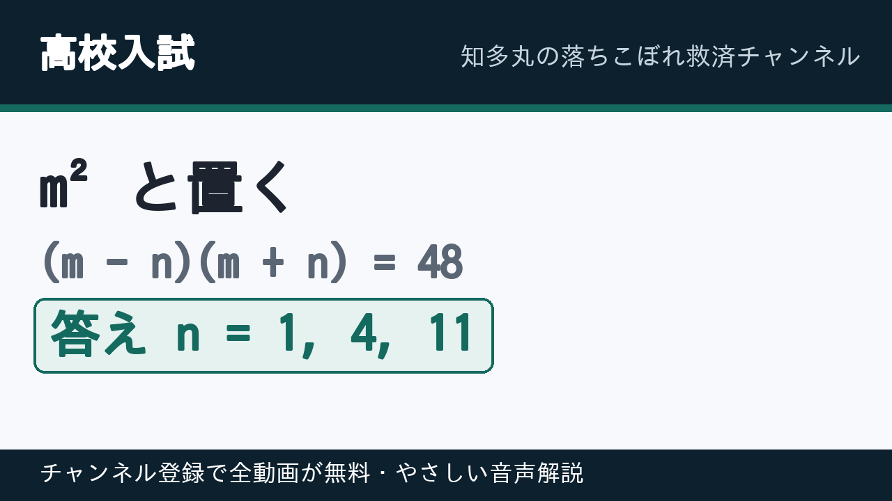

知多丸の落ちこぼれ救済チャンネル
難関大学に合格して、錯覚資産を手に入れて、一流企業に入社しよう！
解説動画はすべて無料です。チャンネル登録をすると、新しい動画と続きのシリーズがすべて自動で届きます。
チャンネルの開設準備中です。下の解説ページでは、同じ内容をすでに無料で見られます。
1本1型です。問題を5分だけ考える → 動画で型を確認する → 翌日、何も見ずに解き直す。この順で使ってください。
高校数学I・A｜暗記数学で解法の型をそろえる

【高校数学I】放物線の頂点は平方完成だけ／y = x² + 8x + 5
「頂点を求めよ」と言われたら平方完成。ほかの方法を探さないのが要領です。

【高校数学I】2次方程式は10秒で因数分解を見切る／x² − 5x + 3 = 0
因数分解を探す時間は10秒まで。出なければ即、解の公式に切り替えます。

【高校数学I】実数解の個数は解かずに判別式だけ／x² − 6x + 10 = 0
「個数を求めよ」は解いてはいけません。判別式の符号だけ見ます。

【高校数学I】正弦定理で辺を出す／A = 45°, C = 75°, BC = 2
角が2つ分かれば残り1つは引き算。あとは正弦定理に入れるだけです。

【高校数学I】三角形の成立条件は場合分け不要／3辺が 2, x+3, 3
3つの不等式を書く必要はありません。「差 < 残り < 和」の1行で終わります。

【高校数学I】仮平均法でズレだけ足す平均の出し方
3桁の足し算はしません。基準からのズレだけを足します。

【高校数学A】組合せは2つの道具で一瞬／₁₀₀C₉₈ と ₂₁C₁₅ + ₂₁C₁₆
Cの下が大きいときは、小さい方に置き換える。これだけで計算量が激減します。

【高校数学I】x²の係数が1でない平方完成は3拍子／y = 2x² − 12x + 5
まず係数でくくる。中でだけ平方完成する。最後にくくった数を戻す。

【高校数学I】定義域つき最大・最小は3点だけ調べる／0 ≦ x ≦ 3
グラフ全体を考えると迷います。見るのは「頂点・左端・右端」だけです。

【高校数学I】平行移動は「符号が逆」だけ覚える／検算は頂点
xの移動は符号が逆、yの移動はそのまま。迷ったら頂点で検算します。

【高校数学I】余弦定理か正弦定理かの見分け方／b=3, c=5, A=60°
「2辺とその間の角」なら余弦定理、「辺と向かい合う角が2組」なら正弦定理。

【高校数学I】高さが無くても面積は出る／S = ½bc sin A
高さを探して止まるのが失点の原因。2辺とはさむ角があれば面積は出ます。

【高校数学A】公約数・公倍数は素因数分解の指数で決まる／24 と 36
書き出しません。素因数分解して、指数の小さい方・大きい方を取るだけです。

【高校数学I・2次不等式】x² − 5x + 6 > 0／「＞0は外側、＜0は内側」だけ
不等号の向きで迷うのは、グラフのどちら側かを決めていないからです。

【高校数学I・データの分析】分散は「2乗の平均 − 平均の2乗」／2,4,6,8,10 の標準偏差
偏差を1つずつ書き出す前に、公式1本で終わらせます。

【高校数学A】「少なくとも1回」は余事象で引き算／さいころ2回で6が出る確率
「少なくとも」と書いてあったら、数え上げをやめて引き算に切り替えます。

【高校数学I】sinθ + cosθ が出たら2乗する／sinθcosθ の値
θ を求めようとすると詰まります。和が来たら、迷わず両辺を2乗。

【高校数学A】「隣り合う」はひとかたまり／6人でAとBが隣り合う並び方
数え上げようとすると死にます。「隣り合う」は縛ってひとかたまりにするだけ。

【高校数学A】不定方程式の整数解／3x + 5y = 1 をすべて求める
答えが無限にある方程式。でも書き方は3手順で1行に決まります。

【高校数学B】等差数列の和は平均 × 項数／初項3・公差5の第20項までの和
和の公式は2つ覚えなくていい。使う方を1つに固定するのが要領です。

【高校数学II】円の接線は置きかえるだけ／x² + y² = 25 上の点(3, 4)
接線は5秒で終わります。x² を x₁x、y² を y₁y に置きかえるだけ。

【高校数学II】3次関数の極値は微分してゼロ／x³ − 3x² − 9x + 5
極値でつまずく原因は1つ。値を出すのは f(x)、微分した式ではありません。

【高校数学II】対数は1つのログにまとめるだけ／log₂ 6 + log₂ 12 − log₂ 9
対数は公式を思い出す科目ではありません。真数を1つの数にする作業です。
高校受験数学｜入試で差がつく型

【高校入試】50項が1行で消える／1(0²+1²)+3(1²+2²)+…+99(49²+50²)=○^4
答えが4乗の形なら、各項を「4乗の差」に化けさせます。

【高校入試】斜辺への垂線は「面積2通り」で一発／AB=6, BC=8
相似で長々と解く前に、面積を2通りで書けば1行で出ます。

【高校入試・図形の証明】正方形2つと七角形の面積／44 + 18√3 cm²
材料は「正方形の等辺」「正方形の90°」「垂線の90°」だけ。角は足し引きで作ります。

【高校入試・円】直交する2弦と網目部分の面積／25π/4 + 5/2
交わる弦は方べきの定理。円の面積は r を出さず r² を出します。

【高校入試・因数分解】1 + x² + x^4 は平方の差にする／3問まとめ
たすきがけが効かない4乗の式は、（ ）² −（ ）² を作りにいきます。

【高校入試・軌跡】中点が動いてできる線は半径1/2の円／2π cm と 2 cm²
動く点と固定点の中点は、固定点から見て1/2に縮んだ図形をえがきます。

【高校入試・相似】面積比は辺の比の2乗／△ADE : 四角形DBCE = 4 : 5
平行線を見たら相似。比は「部分どうし」ではなく全体に直してから2乗します。

【高校入試】分数の和は差に直して打ち消す／1/(1·2) + … + 1/(9·10)
通分して9個たすのは負けです。差の形に直せば、真ん中が全部消えます。

【高校入試】放物線と直線でできる三角形の面積／y = x² と y = x + 2
入試の関数の大問は、この1行で終わります。½ ×（y切片）×（xの差）。

【高校入試】食塩水は食塩の重さで式を立てる／5%と12%で8%を350g
パーセントは足せません。混ぜても変わらないのは、食塩水と食塩の重さだけ。

【高校入試】速さの往復は時間で式を立てる／時速4kmと6kmで合計5時間
合計が時間で与えられたら、時間の式1本で終わります。

【高校入試】n/18 と 756/n がともに整数となる n の個数／答え 8個
分数が整数、という条件は「倍数」「約数」に言いかえるだけです。

【高校入試】6で割ると3余り、8で割ると5余る自然数／5番目は117
余りではなく、あといくつで割り切れるかを見ると暗算で終わります。

【高校入試】n² + 48 が平方数になる自然数 n をすべて／1・4・11
平方数の条件は、積が定数の形に持ち込むだけです。
中学数学｜高校数学の土台になる計算の型

【中学数学】正負の数は符号を先に決める／(−3)² × (−2) + (−4)² ÷ (−8)
高校数学でつまずく原因の多くは、実はこの符号処理です。

【中学数学】一次方程式の文章題は x の置き方で決まる／12個で840円
文章題が苦手なのは才能ではなく、置き方の順番を知らないだけです。

【中学数学】連立方程式は消す文字を先に決める／2x + 3y = 12、3x − 2y = 5
連立方程式は考える問題ではなく、手順を固定すれば必ず解ける計算です。
この順でやれば単元が終わります
- 高校数学は「2次関数 → 図形と計量 → データの分析 → 場合の数 → 整数」の順。
- 高校受験数学は「計算の工夫 → 図形 → 円 → 因数分解 → 軌跡」の順。
- 解けなかった問題だけ3回転（書き写す → 翌日 → 1週間後に方針を30秒）。